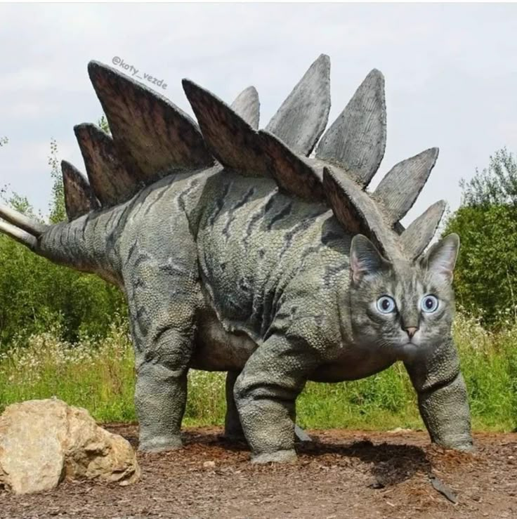

Descubra os Dinossauros Mais Exóticos e Criativos
do Jurássico!
Prepare-se para uma aventura jurássica como você
nunca viu antes! Nesta página, você encontrará
dinossauros que vão além da imaginação, cada um com
características únicas e histórias inesperadas. Desde o
filosófico Filosossauro até o agitado
Punkossauro, esses seres lendários
mostram que a criatividade também habitava o passado
pré-histórico.
Navegue pelos dinossauros exóticos abaixo e clique em
seus nomes para expandir e descobrir detalhes curiosos
e divertidos sobre cada um. Será que você conhece
todos os segredos do Jurrásico? Vamos descobrir juntos!
Filosossauro Philosaurus comtemplus

O Filosossauro era um dinossauro herbívoro peculiar, conhecido não apenas por seu tamanho imponente, mas também por seu comportamento contemplativo. Com uma cabeça grande, adornada com chifres curvados, ele passava horas parado em clareiras, observando o mundo ao seu redor como se estivesse em uma profunda reflexão filosófica.
Os filhotes de Filosossauro eram ensinados a observar a natureza e a meditar sobre questões existenciais, como "O que é ser um dinossauro?" e "Qual o significado da vida nas florestas?" Isso fez com que se tornassem um símbolo de sabedoria entre outros dinossauros, que frequentemente se reuniam em torno dele em busca de conselhos.
Curiosamente, acredita-se que o Filosossauro desenvolveu um comportamento quase pacifista. Quando confrontado com predadores, ele não fugia nem atacava. Em vez disso, erguia uma sobrancelha escamosa, questionando o agressor: “Será que a verdadeira luta não é, na verdade, contra o vazio dentro de nós?”. Ele frequentemente se isolava em montes rochosos para contemplar o horizonte, se perguntando se o universo era realmente infinito ou se os meteoros representavam apenas o final de um grande ciclo cósmico.
Punkossauro Punkosaurus rebellicus

O Punkossauro era um dinossauro de atitude, conhecido por sua crista de espinhos coloridos e seu comportamento rebelde. Com um visual extravagante e uma postura desafiadora, ele se destacava entre os demais dinossauros, que o observavam com uma mistura de fascínio e medo.
Os Punkossauros viviam em bandos, liderados por um alfa que exibia os maiores e mais afiados cabelos. Eles se comunicavam através de grunhidos e batidas rítmicas, criando músicas primitivas que ecoavam pelas florestas jurássicas. Seus rituais de acasalamento envolviam danças frenéticas e competições de exibicionismo, onde os machos exibiam suas cristas em duelos de estilo.
Curiosamente, o Punkossauro era um dos poucos dinossauros que se alimentavam de plantas e carne, combinando uma dieta variada com um estilo de vida agitado. Eles eram conhecidos por caçar em grupo, usando táticas coordenadas para derrubar presas maiores e mais lentas. Apesar de sua aparência intimidadora, os Punkossauros eram criaturas sociais e protetoras, que defendiam seu território com unhas e dentes contra invasores.
Musculosaurus Fitnesstaurus energicus

O Musculosaurus é o verdadeiro "rato de academia" da era jurássica, um dinossauro obcecado por ficar em forma e desenvolver sua força. Ele é facilmente reconhecido por seus músculos bem definidos, escamas brilhantes e uma postura sempre ereta, como se estivesse posando para uma competição de fisiculturismo a qualquer momento.
Este dinossauro passa horas em sua “academia natural”, que consiste em grandes pedras e troncos de árvores, onde ele levanta pesos de rochas e faz flexões com sua cauda. O Musculosaurus tem um grupo de amigos igualmente dedicados, e eles frequentemente se reúnem para treinos em grupo, onde competem para ver quem consegue levantar mais peso ou correr mais rápido entre os grandes pilares de rochas.
Além de sua paixão pelo fitness, o Musculosaurus é um motivador natural. Ele não hesita em encorajar outros dinossauros a se juntarem a ele na busca por uma vida saudável e ativa. “Vamos lá, pessoal! Cada repetição conta! O futuro do seu corpo começa agora!” é seu lema.
Fofocassauro Gossiposaurus verbosus

O Fofocossauro é a verdadeira máquina de boatos da era jurássica. Conhecido por sua língua afiada e seu insaciável apetite por novidades, ele passava mais tempo conversando do que caçando ou se protegendo de predadores. Sempre com as orelhas em pé, ele parecia ter um radar natural para captar qualquer ruído de interesse – seja um conflito entre dois Tiranossauros ou o acasalamento secreto de um casal de Pterodátilos
O Fofocassauro não era malicioso, mas simplesmente incapaz de guardar uma informação para si. Se um Velociraptor desaparecia misteriosamente, o Fofocassauro já estava lá, narrando uma teoria elaborada sobre onde ele foi parar, completando a história com detalhes "exclusivos" que ele supostamente soube em primeira mão. Suas conversas raramente eram confirmadas, mas isso não importava, pois o que ele amava de verdade era o drama e o entretenimento de espalhar as fofocas
Em termos físicos, o Fofocassauro possuía uma boca surpreendentemente grande e ágil, ideal para falar sem parar, e ouvidos aguçados, perfeitos para capturar cada sussurro do vale. Sua cauda longa às vezes balançava de forma nervosa, como se estivesse sempre pronta para contar a próxima novidade.
Apesar de ser um falador nato, o Fofocassauro muitas vezes escapava de enrascadas ao usar seu dom da palavra para se safar de situações perigosas, distraindo predadores com uma história dramática sobre algum "escândalo" entre outras espécies. Afinal, quem poderia resistir a uma boa fofoca?
Nerdossauro Intellectusaurus geekus

O Nerdossauro é, sem dúvida, o mais curioso e peculiar de todos os dinossauros. Reconhecido pela sua fixação por padrões, teorias e colecionáveis pré-históricos, esse dinossauro poderia facilmente ser encontrado nas cavernas mais silenciosas, rodeado de pedras brilhantes que ele organizava metodicamente, categorizando-as por cores e densidade.
Com sua postura levemente corcunda e seus olhos sempre semicerrados de tanto examinar detalhes, o Nerdossauro podia ser visto ajustando seus óculos de pedra (um invento que, embora inútil, lhe conferia um ar intelectual). Seus amigos mais próximos eram o Filosossauro, com quem discutia teorias do tempo e do espaço, e o Tecnossauro, com quem dividia o entusiasmo por novas invenções.
Embora fosse alvo de piadas por parte de dinossauros mais "ativos", o Nerdossauro sempre tinha uma resposta afiada na ponta da língua: "Podem rir de mim, mas quando um meteoro estiver chegando, quem vocês vão querer do lado? O cara forte ou o cara que sabe calcular a trajetória dele?"
Kittssauro Felisaurus fofus

O Kittssauro é um dinossauro que desafia todas as expectativas. Com a mistura entre a pele grossa de um estegossauro e olhos grandes e nariz rosado de um felino, ele se assemelha a um gato gigante, mas com a força e a agilidade de um predador jurássico. Seu ronronar profundo e seu jeito brincalhão conquistaram o coração de muitos dinossauros, que o viam como um ser misterioso e encantador.
Apesar de ser um animal de estimulação e de desafio, o Kittssauro não é malicioso. Ele não causa danos nem ataca, apenas ajuda os dinossauros que o atacam. Seu objetivo é apenas comer as plantas e as carnes que os dinossauros estão começando a se alimentar, e ele não tem medo de se aproximar deles para conseguir o que quer.
Curiosamente, o Kittssauro é um dos poucos dinossauros que se alimentam de plantas e carne, combinando uma dieta variada com um estilo de vida agitado. Eles são conhecidos por caçar em grupo, usando táticas coordenadas para derrubar presas maiores e mais lentas. Apesar de sua aparência intimidadora, os Kittssauros são criaturas sociais e protetoras, que defendem seu território com unhas e dentes contra invasores.